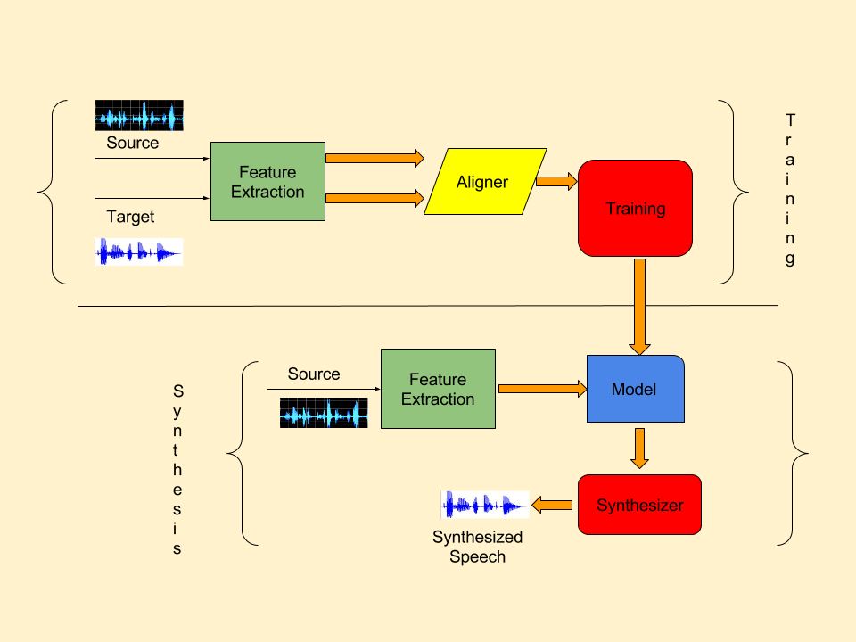

Voice Conversion
A look into various Machine Learning based solutions
Seminar Guided by Dr. Ramamoorthy Srinath
Seminar by Aditya Dalwani | 1PI12CS011
Presentation Structure
1. Introduction
What is Voice Conversion?
What are the Goals of Voice Conversion?
Which Speech Related Applications depend on VC?
Potential Misuse of Voice Conversion
2. Solution Timeline
A Typical Voice Conversion System
Evolution of Solutions
Traditonal vs Modern Techniques
3. Current State-Of-The-Art
Conception of the Solution
Overview of Related Technology
Solution
Results
Conclusion
Introduction
What is Voice Conversion?
General Definition : Technique to modify the speech signal of one speaker (source) to sound like that of another speaker (target).
Extended : To modify (transform) the characteristics of the speech signal. (Eg. changing emotion/ pronunciation)


What are the Goals of Voice Conversion?
Ultimate Goal : The exact same content spoken by the source should be emitted by the VC System in the target's so that it passes the Turing Test.
The smaller goals that a VC System has to solve is understanding what needs to be changed (Can be used specifically as well).
- Spectrum
- Prosody
- Spectrum as well as Prosody
Applications around Voice Conversion
- Text-To-Speech Systems (TTS)
In these systems, the content to be spoken is generated as text. Speech Synthesis is hard, and extending that to multiple voices would make it that much harder. Hence, generate one voice, convert to others.
- Application to Various Innovations
With the rate of growth of consumers, especially in terms of smartphones, a variety of new and useful applications are starting to emerge in domain of voice and speech processing.
Possible Misuse of VC
“With Great Power Comes Great Responsibility”
One of the many techniques applicable in the voice domain is Voice Fingerprinting. This allows one to identify or profile individuals on the basis of their voice much like how normal fingerprints are used.
Voice Conversion could prove to be the key to the lock provided by Fingerprinting in security applications, rendering voice fingerprinting practically useless in that domain.
Solution Timeline
A Typical VC System
Evolution of VC Systems
1988: Voice Conversion Through Vector Quantization
Authors: Abe, Nakamura, Shikano, Kuwabara
- Technique involved mapping voice codebooks (from Vector Quantization) between speakers using Dynamic Time Warping distance between the two time series.
- The correspondences were accumulated as histograms which served as a weighting function.
- This function would be applied on a linear combination of vectors to achieve the conversion.
1994: Transformation of Formants for Voice Conversion Using Artificial Neural Networks
Authors: Narendranath, Murthy, Rajendran, Yegnarayana
- A formant is a concentration of acoustic energy around a particular frequency in the speech wave.
- System is a symmetric-looking ANN. Inputs are the source formants, outputs are the target formants.
- Trained using the traditional backpropagation algorithm.
1998: Continuous Probabilistic Transform for Voice Conversion
Authors: Stylianou, Cappe, Moulines
- Make use of GMM (Simplified ergodic HMM) which acts as a 'soft' classifier.
- The actual conversion is done similar to how Abe et. al carried out their conversion, but components are now clustered into Gaussians rather than individually considered as in the VQ approach.
- The parameters of the conversion function are determined by minimization of the total quadratic spectral distortion between the converted envelopes and the target envelopes. DTW is applied for this.
1998: Spectral Voice Conversion for Text-To-Speech Synthesis
Authors: Kain, Macon
- Vector Quantize training data. Source and target vectors are aligned using DTW and GMMs were constructed and trained using EM algorithm.
- Spectral info converted in parameterized way using GMM, Pitch adjusted using mean and variance of target pitch
2001: Voice Conversion Algorithm Based on GMM with Dynamic Frequency Warping of STRAIGHT Spectrum
Authors: Toda, Saruwatari, Shikano
- In VC with GMMs, quality of converted speech is degraded as the spectrum is exceedingly smoothed.
- Use DFW to avoid over-smoothing. "Residual" spectrum (difference between GMM and DFW spectra) avoids deterioration of conversion accuracy.
2005: Spectral Conversion Based on Maximum Likelihood Estimation Considering Global Variance of Converted Parameter
Authors: Toda, Black, Tokuda
- Spectral Conversion using GMM.
- Smooth Spectral sequence can be obtained from MLE using dyamic features to the GMM-based mapping, but oversmoothing will continue to be an issue due to ML based parameter estimation.
- To avoid this, ML based conversion taking account global variance of the converted parameter in each utterance.
2013: Voice Conversion in High-order Eigen Space Using Deep Belief Nets
Authors: Nakashika, Takashima, Takiguchi, Ariki
- The core idea was to shift conversion of features from Source to Target to the eigen space instead of cepstral space to facilitate easier transformation.
- A set of Deep Belief Networks were trained to perform the shift of space (and vice versa) and NN to actually perform the conversion in the eigen space.
Traditional vs Modern Systems
An interesting lesson learnt from this timeline is with regards to the application of systems any ML problem. A couple of decades ago, the major approaches to solve VC began with Vector Quantization (based on k-means clustering) in combination with statistical approaches. Gradually, the approach shifted to Neural Nets and then to GMMs to capture the waveforms. Finally, a more non-linear approach was built using Deep Belief Nets.
The above actually prove that at any instance in time, the emerging technologies are very potent in their ability to improve the performance of AI problems that haven't been satisfactorily solved before.
Current State-of-the-Art
Conception
- The approaches based on GMMs rely on "shallow" voice conversions.
Shallow: methods are based on piecewise linear transformations
- Two Hypothesis:
- Human speech is more a non-linear entity, hence, a non-linear VC model is better suited to the problem of VC.
- Discriminative models are more suited to this task than Generative models.
- Proof?
Conception (Contd.)
- GMM Based approaches often suffer from over-smoothing due to feature learning through Gaussian mixtures which cause outputs to fall near the mean of the resultant Gaussian.
- These approaches also suffer from over-fitting as its easy to overshoot the optimum number of Gaussians to overfit training data while training.
- The work on NN based Voice Conversion (presented in the timeline) is known to perform much better than the GMM based VC.
- Although NNs may also suffer through problem of over-fitting, it can be avoided by carefully preparing the training data and tweaking hyperparameters.
Conception (Contd.)
- The authors decided to extend their previous work in which they used RBMs to learn higher order features to reduce the problem of over-fitting. A concatenating NN was used as well.
- They improved on the same work to systematically capture temporal as well as latent (deep) relationships between source and target speech by retaining the concatenating NN, but replacing the vanilla RBMs by Speaker Dependent Recurrent Temporal RBMs.
Let's Get More Technical!
- Restricted Boltzmann Machines (RBMs):
- Boltzmann Machines are a form of Markov Random Fields whose energy function is of a linear form.
- Simple BMs are made more powerful by arranging them in such a manner that not all units have an observable component to them i.e. they are arranged in various hidden layers that represent latent behavior that influence the observables but are not themselves directly observable.
Technical Background (Contd.)
- These more powerful BMs will become hard to train if all connections are maintained. So, the connections are restricted such that all units from one layer are connected to all other units from another layer. Hence the name "Restricted Boltzmann Machines".
Technical Background (Contd.)
So how is RBM different from a NN with hidden layers?
RBMs are also Neural Nets! However, they are not interpreted as feedforward networks, but more like bipartite graphs where the idea is to learn the joint probability distribution of hidden and input variables.
Not only this, RBMs have a different set of training algorithms. Furthermore, RBMs have the capability to learn representations and generate samples (Generative model), but the trained weights can also be used in the feedforward sense.
Building up!
- Temporal RBMs (TRBMs):
- A TRBM is a sequence of RBMs arranged in such a way that at a given timestamp, the RBMs biases depend only on the state of the RBM at the previous timestep.
- They are analogous to HMMs but with an infinitely large state space and compact emission and transition probabilities. However, they are exponentially expensive to train and hence exact inference is hard.
Pre-Heating the Oven!
- Recurrent Temporal RBMs (RTRBMs):
- RTRBMs are an extension to TRBMs that are simple to train and infer from. They are designed much like Recurrent Neural Networks and have a set of weights from hidden of previous timestep to hidden of current timestep which make things easier in terms of the algorithmic design and complexity.
- RTRBMs are therefore, not only capable of capturing the latent relationships in terms of hidden abstractions, but also can now capture latent temporal relationships, hence making them a good candidate for voice based complex tasks, such as the one for VC.
Recurrent Temporal Restricted Boltzmann Machines
Actual Solution
- Encoder-Decoder kind of architecture.
- The architecture consists of individual Speaker-Dependant RTRBMs.
- By this, it is meant that the RTRBMs are trained separately on each speaker beforehand (encoder-decoder ends).
2. B, C and h together capture temporal information
3. W and h capture latent abstract information
Actual Solution
- Bridge between independent RTRBMs is made up by a Neural Net that maps the linguistic features between the two (as this needs to be kept common across both)
- Once individual trained components are aligned, the entire flow is fine-tuned using BPTT (Backpropagation Through Time).
Experimental Results
- Conditions: 4 algorithms used: GMM based, Simple NN based, SD-RBM, RNN and SD-RTRBM.
The 3 NN-based approaches each have 4 layers in total. Conversion types tried were M-F, M-M and F-F. - Objective Evaluation Metric Used: Mel-Cepstral Distortion (MCD) [measure how close the converted vector was to the target vector in the mel-cepstral space]
- Subjective Evaluation Metric Used: Mean Opinion Score (MOS)
Experimental Results (Contd.)
Experimental Results (Contd.)
Conclusion
- A state of the art, novel technique for VC was presented, which makes use of SD-RTRBMs and a NN to extract time-dependent unique speaker information from the sequential data.
- Experiments prove that this new approach is more effective, regardless of gender and in terms of MCD and MOS, than well-known approaches using GMMs, NNs, previous work on RBMs.
- The new approach can be thought of a special generative type of RNN applied to VC.